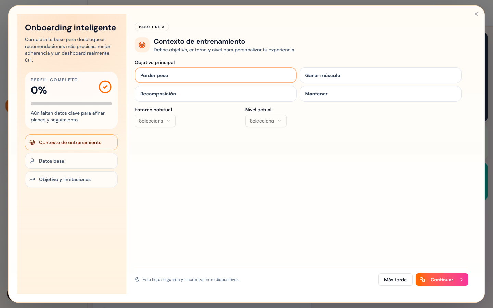
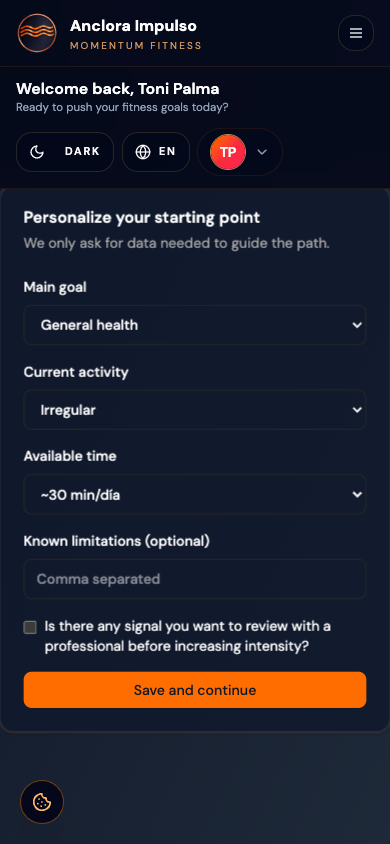
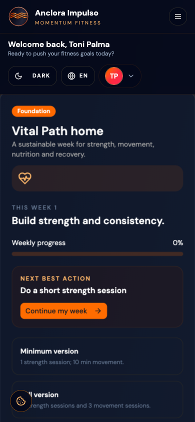
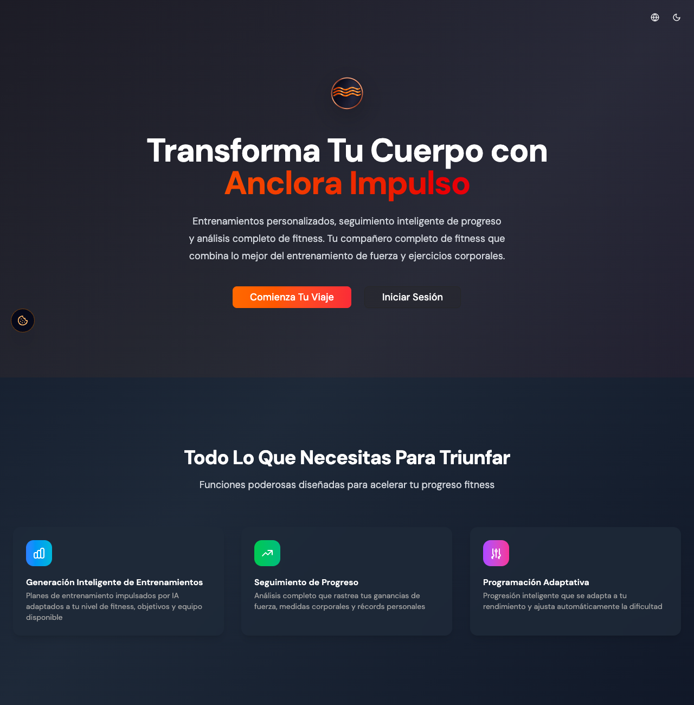
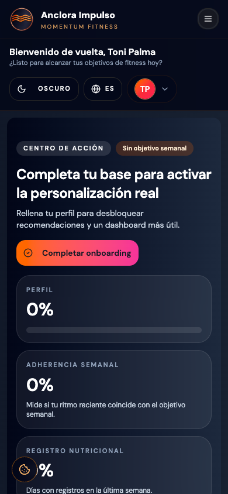
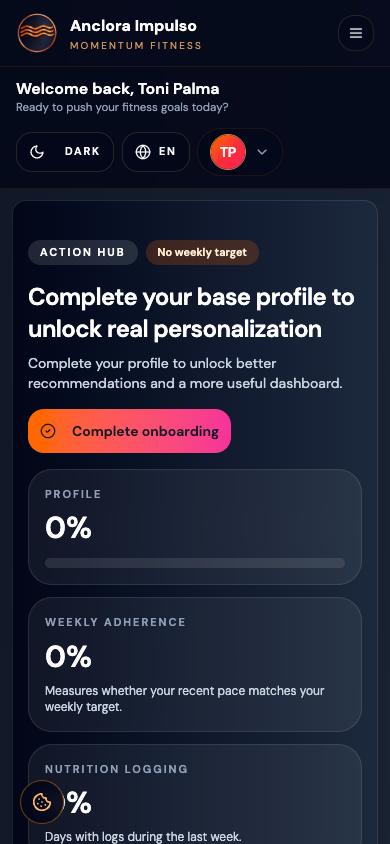

FINAL_RESULT: FAIL — RELEASE GATE OPEN
| Dimension | Assessment |
|---|---|
| User friction | Incomplete profile/onboarding disables workout generation. |
| Simplification | Unify first authenticated setup for profile, workout and Ruta Vital. |
| Cognitive load | Dashboard exposes several parallel nudges; one next action should dominate. |
| Premium opportunity | Replace generic empty/nudge blocks with state-specific guidance. |
| Mobile workout | Focused implementation exists, but production execution was not safely reachable. |
| Overall | Strong access foundation; incomplete confidence on the core recurring fitness task. |
| Gate | Result | Evidence |
|---|---|---|
| Branches / CI / Vercel | PASS | All four branches at 1dc9241; CI 34896340988 success; Vercel Ready. |
| Production auth smoke | PASS | Login POST 200, redirect dashboard, API 200. |
| Session refresh/logout | PASS | Refresh stays private; logout and protected-route redirect pass. |
| Ruta Vital | PARTIAL | Discovery, enrollment 201, onboarding, phase/week, CTA and persistence pass; cross-module completion incomplete. |
| Workout smoke | BLOCKED_WRITE | No safe existing workout fixture; no generation/profile write executed. |
| Accessibility | PARTIAL | Snapshot semantics pass on reachable surfaces; full core pass pending workout fixture. |
| Release gate | FAIL | Three release blockers remain open. |
Canonical production loaded successfully. Login with the authorized test account returned HTTP 200 and redirected to /dashboard. The browser observed successful calls to /api/auth/me, /api/profile, /api/progress/complete, /api/nutrition/summary, /api/nutrition/meal-plans, /api/workouts and /api/engagement/nudges. The canonical preflight returned 204 with explicit origin https://impulso.anclora.com and credentials enabled.

Ruta Vital is discoverable from the authenticated shell. The production flow rendered a non-clinical onboarding with goal, activity, available time, limitations and a professional-review choice. Enrollment returned 201. After saving, the home showed Foundation/current week, weekly actions and one dominant “Continue my week” action. The handoff reached workout generation, where the product correctly disabled generation while the separate workout onboarding remained incomplete.


| Surface | Observed result |
|---|---|
| Dashboard / shell | Authenticated; sidebar desktop; hamburger mobile; setup state visible. |
| Progress | Charts/Measurements/Records tabs; low-data state and Ruta Vital link. |
| Nutrition | Log Meal and first-plan empty state; AI plan disabled until profile setup. |
| Gamification | Gamification page and locked state render. |
| Exercises | Search, four filters, dense library, mixed image/no-image cards and detail modal. |
| Profile | /profile returned 404; no current page route found. This is recorded, not silently treated as available. |
| Workout generation/execution | Generator visible but disabled; execution requires a safe fixture or authorized write. |
| Finding | Final status | Basis |
|---|---|---|
| UX-01 focused workout workspace | PARTIALLY_RESOLVED | Implementation/previous execution evidence; final production fixture not reached. |
| UX-02 mobile shell | STILL_PRESENT | Mobile shell remains hamburger-first; active workout not reached. |
| UX-03 set accessible names | PARTIALLY_RESOLVED | Unique names supported by code/previous browser evidence; final execution pending. |
| UX-04 media placeholders | STILL_PRESENT | R16 shows mixed image/no-image cards. |
| UX-05 AI trust | PARTIAL | Generator state visible; real generation/regeneration not executed. |
| UX-06 progress low-data | STILL_PRESENT | Low-data state and recommendation render; interpretation remains open. |
| UX-07 fitness loop | REFINED_PARTIAL | Cross-links exist; direct Ruta Vital outbound orchestration incomplete. |
| UX-08 public entry | REFINED_STILL_PRESENT | Both root and landing render; manifest start_url is /landing; duplicate model remains. |
| UX-09 provider parity | RESOLVED_READONLY | Login and signup expose Google/GitHub. |
| UX-10 mobile auth card | STILL_PRESENT | Generous card remains around short form. |
| UX-11 brand palette | STILL_PRESENT | Copper/orange remains secondary to broader proof accents. |
/ and /landing both render the public landing. Login/signup remain explicit routes. The manifest is valid and declares start_url=/landing. Render health routes are correctly mounted at root (/health/live, /health/ready, /health/simple, /health); all returned 200. The historical /api/health/* paths are not referenced by frontend source or production traffic and are therefore classified as legacy/non-blocking.

Light and dark private surfaces rendered at 1440×900 and 390×844. ES and EN private navigation/content rendered, and document.documentElement.lang switched correctly. Browser accessibility snapshots confirmed headings, named controls, tabs, labels and the visible Ruta Vital onboarding semantics. This is not a full certification of contrast, reduced motion, screen reader traversal or workout timer semantics because the execution surface was not reached.


F-01 and F-05 are verified fixed. F-04 is refined, not removed: the landing exists, but the entry model remains split. F-02, H-08, and OAuth callback remain not retested. F-06, F-07, F-09, UX-02, UX-04, UX-06 and UX-11 remain open or partially open as documented. H-09–H-13 are partially verified with current private browser evidence.